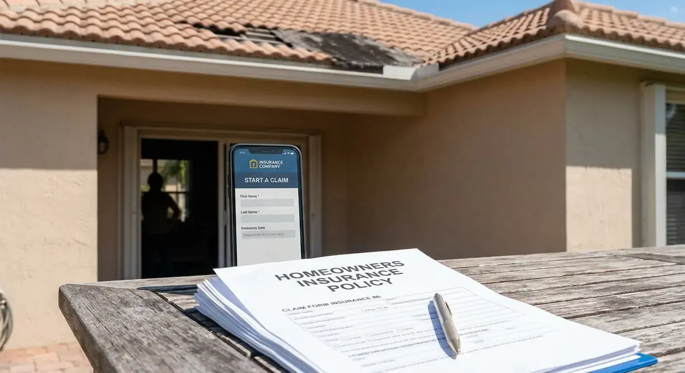

Roof Replacement Cost in Miami: What Affects the Price?
There is no single price that fits every Miami roof. A reliable estimate depends on the property's roof area, slope, existing materials, access, condition and the installation system being proposed. The best way to compare offers is to make sure each contractor is pricing the same work and materials.
1. Roof size, shape and pitch
Contractors generally assess the roof's actual surface area rather than relying only on the home's interior square footage. Multiple roof planes, steep sections, valleys, dormers and complex edges can increase labor and material requirements. Ask whether the estimate identifies the measured area and explains how it was calculated.
2. Roofing material and system
Asphalt shingles, concrete or clay tile, metal panels and low-slope roofing systems have different material costs, installation methods and accessory requirements. The right system depends on the existing structure, building design, budget, exposure and applicable product approvals. A quote should name the product or system instead of saying only “new roof.”
3. Tear-off and disposal
Some projects require removal of one or more existing roofing layers. Tear-off, hauling and disposal can affect the project price. Ask whether removal is included, how many layers are assumed and what happens if hidden conditions are discovered after the old roof is removed.
4. Decking, flashing and hidden repairs
Damaged roof decking, deteriorated fascia, underlayment issues, flashing around chimneys or vents, and other concealed defects may require additional work. An estimate should explain how concealed damage will be documented, priced and approved before extra work begins.
5. Access, height and job conditions
Limited access, landscaping, neighboring structures, roof height and staging requirements can influence labor and equipment needs. Ask the contractor to explain any line items related to access, protection, cleanup or special equipment.
6. Permits, inspections and product approvals
Permit and inspection requirements depend on the project and the applicable jurisdiction. Ask who is responsible for permits and inspections and which product approvals or installation details apply. Review the current guidance from Miami-Dade County's roofing permit information and Product Control.
What a useful replacement estimate should include
- Measured roof area and the work areas included
- Exact roofing material, underlayment and accessory details
- Removal, disposal and site-protection arrangements
- Decking or concealed-damage allowance and approval process
- Permit, inspection and product-approval responsibilities
- Labor, cleanup, payment schedule and project timeline
- Manufacturer and workmanship warranty terms and exclusions
How to compare roofing quotes
Request written estimates from qualified providers and compare the scope line by line. A lower total may exclude important work, use different materials or assume conditions that another contractor has included. Verify the contractor's current license and insurance independently, and do not rely on verbal promises that are missing from the written agreement.
Get a project-specific estimate
For a useful discussion, gather the property's ZIP code, roof type if known, approximate roof age and a description of the work needed. The roofing quote request form lets you submit those details for review. A submission is an inquiry only and does not guarantee a price, contractor availability or project acceptance.
Read about Miami roof replacement · Compare repair and replacement · Browse all roofing guides
Request a Roofing Quote